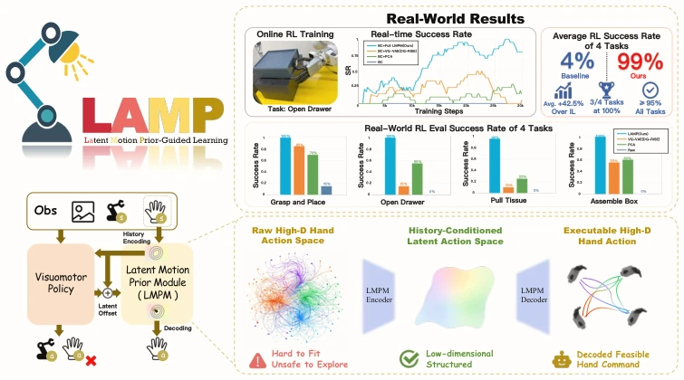
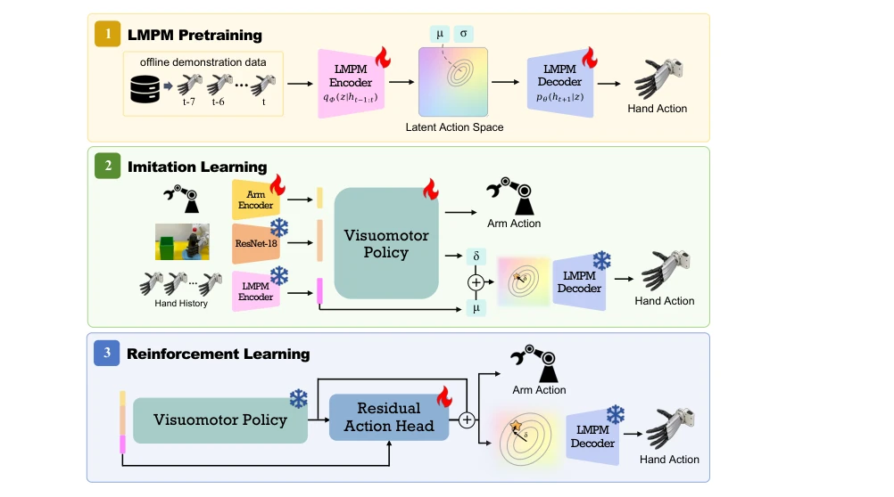
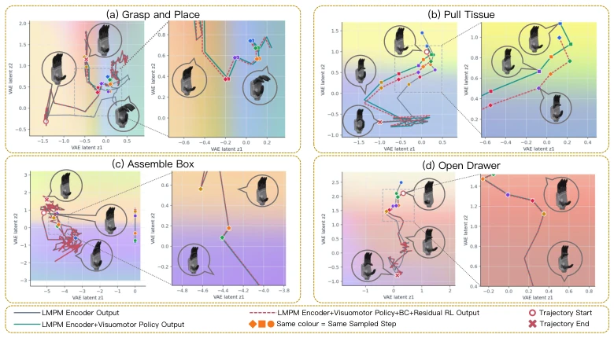
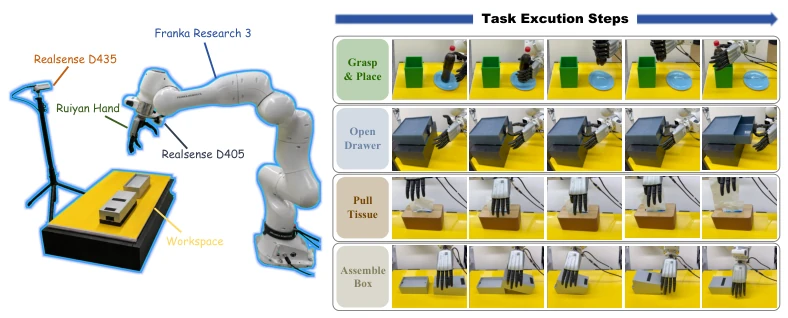
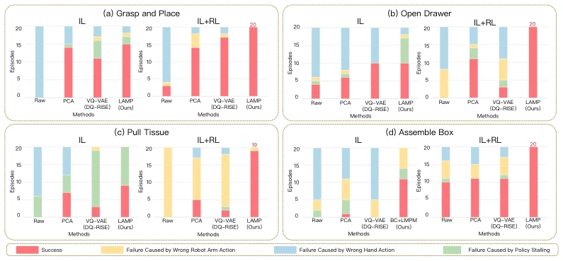
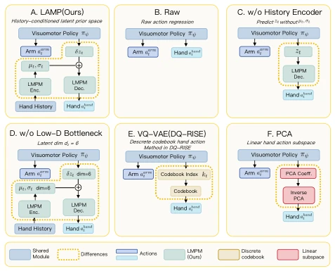

This paper adds an "invisible safety belt" to dexterous hand learning. LAMP constructs a latent space prior using historical actions, compressing high-dimensional hand control into low-dimensional latent variables, allowing imitation learning and residual reinforcement learning to operate within the same "safe zone". Although the real-world success rate soars to 98.75%, the prior is task-specific, requiring retraining for different tasks, raising doubts about generalization. Compared to PCA and VQ-VAE, it is indeed stable, but at the cost of relying on offline data quality. It counts as an "anti-shake" filter for real-world RL, though the filter still needs to be changed according to the scenario. This design avoids the high-dimensional exploration risk in the original space, but essentially it is still "dancing with shackles", suitable for specific contact patterns, with generalizability yet to be verified.
Dexterous hand manipulation is difficult due to "high dimensionality" and "contact". High-dimensional action spaces cause imitation learning to easily accumulate errors, leading to hand drift [5]; while reinforcement learning exploration in the original space easily disrupts contact, leading to task failure. There is a reality gap in simulation-to-real transfer [1]. Existing methods either linearly compress (PCA) failing to fit the manifold, or discretely quantize (VQ-VAE) causing action jumps [5]. This paper aims to solve the safety and sample efficiency problems of real-world exploration, utilizing the low-dimensional structural characteristics of human actions, constraining the exploration range through history-conditioned priors to avoid contact disruption.
The framework is divided into three stages. 1. Pretrain LMPM: The encoder maps recent hand action history to a Gaussian latent prior, the decoder reconstructs it into executable targets, and KL regularization ensures compactness. 2. Imitation Learning: The policy predicts arm commands and latent space offsets, adjusted based on the prior center. 3. Residual RL: Add residual correction in the latent space to avoid original space perturbations. The core innovation is the "history-conditioned" latent space, ensuring exploration always revolves around contact-consistent action manifolds, rather than independently perturbing joints. Arm actions retain the original space to express task-level changes, hand actions are corrected in the latent space, achieving decoupled control. After freezing, LMPM serves as a shared interface, ensuring IL and RL operate under the same coordinates, avoiding distribution shift.

Figure 1: LAMP uses a learned motion prior to expose high-dimensional dexterous hand motion through a compact latent action space, where imitation learning predicts latent offsets and residual reinforcement learning adds latent residuals before decoding executable hand actions.

Figure 2: Overview of LAMP. The framework first learns LMPM from demonstrated hand motion and then uses the frozen prior interface in both behavior cloning and real-world residual RL.

Figure 6: Latent action-flow visualization for the four tasks. Gray trajectories show the LMPM encoder output, teal trajectories show the latent action after adding the IL-predicted latent offset, and red dashed trajectories show the final latent action after applying the RL latent residual. Hand icons show decoded hand gestures at representative latent locations, and markers with the same color indicate the same sampled timestep.
Tested 4 tasks (grasping, opening drawers, pulling tissues, assembling boxes) on a Franka robotic arm + Ruiyan dexterous hand. Compared with Raw, PCA, VQ-VAE. The metric is success rate. In the IL stage, LAMP averaged 56.25%, reaching 98.75% after RL. Ablation shows performance drops when removing the history encoder or low-dimensional bottleneck. Visualization shows latent space trajectories are smoother, exploration is closer to the manifold. It proves that latent space priors can effectively improve sample efficiency and contact stability of real-world RL. Achieved 100% success rate on tasks like Open Drawer, outperforming baselines.

Figure 3: Real-world setup and task scenes. The setup uses a Franka Research 3 arm, a Ruiyan dexterous hand, a front-view RealSense D435 camera, and a wrist-mounted RealSense D405 camera; the right panel shows execution-flow illustrations for the four tasks.

Figure 4: Real-world evaluation on four dexterous tasks. Each bar reports success counts and failures categorized as arm-action error, dexterous-hand error, or stalled execution.

Figure 5: Network architectures for our method, baselines, and ablations.